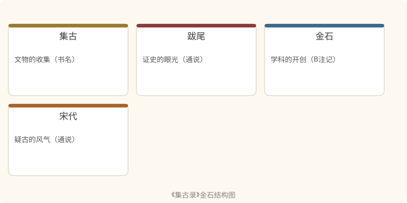

集古录
一、基本信息
| 作者 | 欧阳修 |
|---|---|
| 成书/出版 | 作者页注记：Britannica 列举——集古录（金石学——成书年份通说待核——1063跋尾说） Ouyang Xiu — Encyclopaedia Britannica（百科全书） |
| 国别/地区 | 中国 |
| 时代 | 古代 · 北宋 |
| 体裁 | 金石学著作 |
| 语言 | 汉语（文言） |

《集古录》金石结构图（主题·结构图）
二、创作背景
作者页注记：集古录——'金石学（Britannica 列举）'。
Britannica：欧阳修——北宋文宗（作者页交叉）。
题材（通说待核）：周秦至隋金石跋尾——'集古录跋尾'十卷。
三、内容脉络
（通说待核）金石拓片的跋尾：证史与赏鉴。
（通说待核）'集古'：千年文物的收集。
四、主要人物表
| 人物 | 身份 | 说明 |
|---|---|---|
| （金石学无人物） | —— | 学术著作 |
五、主题与艺术特点
- 金石学的开创（B注记：金石学）。
- 跋尾的证史与审美（通说待核）。
- 文物与历史互证（通说待核）。
六、影响与评论
- Britannica：集古录（作者页注记）。
Ouyang Xiu — Encyclopaedia Britannica（百科全书） - Britannica：欧阳修文坛地位（作者页交叉）。
Ouyang Xiu — Encyclopaedia Britannica（百科全书）
七、阅读建议
难点
- 金石文字的释读。
- 宋代学术的'疑古'风气。
- 《集古录》（《欧阳修全集》等——通说待核）。
- 宋刻本说待核。
欧阳修学术侧面；与《新五代史》对读。
八、待核实
- 跋尾十卷结构核对（通说）。
- 1063年跋尾成书说待核。
- '金石学开创'评价核对。